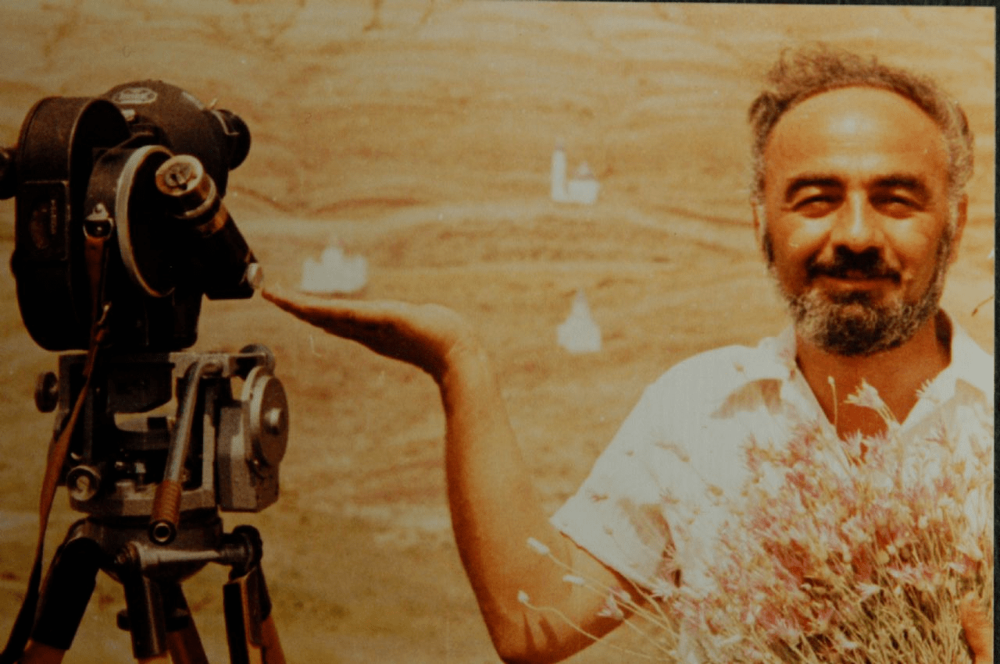

Sergei Parajanov
Orn Sarkis Yossifovich Paradjanian de padres armenios el 9 de enero de 1924 en Tbilisi, Georgia, Sergei Parajanov se transfirió del Instituto de Ingeniería Ferroviaria de Tbilisi (1942) al Conservatorio de Música de Tbilisi (1943-45) para estudiar canciones y violín antes de obtener la admisión en 1946 a VGIK, la Escuela Estatal de Unión Soviética para Arte Cinematográfico y Cinematografía (también conocida como Escuela de Cine de Moscú). Se graduó como director de cine en 1951 bajo la tutela de los maestros ucranianos Igor Savchenko y Alexander Dovzhenko y encontró empleo en los Estudios de Cine de Kiev (más tarde renombrados los Estudios Alexander Dovzhenko).